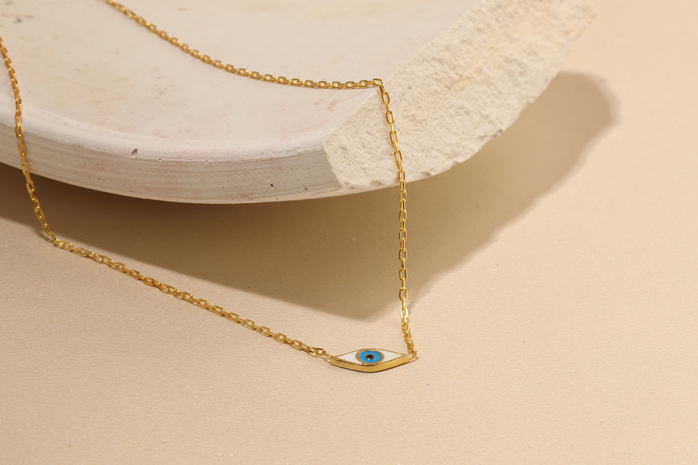

Gümüş takılar, zarif duruşu ve çok yönlülü kullanımıyla minimalist stil severlerin vazgeçilmezi haline gelmiştir. Sadeliğin şıklığını benimseyenler için gümüş takılar, her türlü kombine uyum sağlayarak hem gündelik hem de özel anlarda öne çıkar. İşte gündelik hayatınızın bir parçası olacak minimalist gümüş takıların tercih edilme nedenleri ve kombin ipuçları:
Minimalist bir stil için seçilen gümüş takılar genellikle:
Minimalist gümüş takılar, ofis ortamında zarif bir dokunuş katarken dikkat dağıtmayacak bir şıklık sunar. Ofis için öneriler:
Gümüş takılar, kot pantolon ve tişört gibi grt gibi g\u00fndelik kombinlerinize zarif bir detay ekler. Aşağıdaki ipuçlarıyla stilinizi yükseltebilirsiniz:
Minimalist gümüş takıları günlük hayatınızda kullanarak hem şıklığınızı koruyabilir hem de rahatınızdan ödün vermeden stil sahibi olabilirsiniz. Zamansız ve zarif parçalarla her kombinde kendinize özgün bir dokunuş ekleyebilirsiniz.